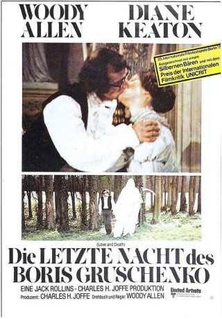
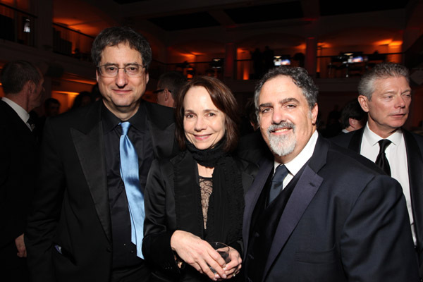
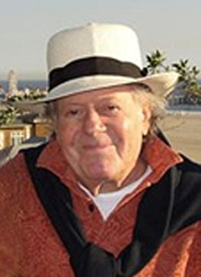

#7314 Die Letzte Nacht des Boris Gruschenko
Alternativ: Love and Death
 
 IMDB-Wertung: 7.8 / 10
IMDB-Wertung: 7.8 / 10  Metascore: 0
Metascore: 0 
Boris Gruschenko sitzt im Jahre 1812 in einem französischen Gefängnis und wartet auf seine Hinrichtung am nächsten Morgen. Er läßt sein Leben Revue passieren, erinnert sich an die Liebe zu seiner Cousine Sonja (Diane Keaton) und seine Abenteuer beim Militär.
Jahr: 1975
Dauer: 81 Minuten
FSK: 16
Land: USA Studio: United ArtistsTonspuren: DD2.0 - ,
Untertitel:
Auflösung: 1080p (1920x1080) Größe: 6318 MB
Genre: Komödie, Krieg
Regisseur:  Woody Allen
Woody Allen
Drehbuch: Woody Allen
Soundtrack:
Darsteller:
 Woody Allen als Boris
Woody Allen als Boris Diane Keaton als Sonja
Diane Keaton als Sonja- Edmond Ardisson als Priest
 Féodor Atkine als Mikhail
Féodor Atkine als Mikhail Gérard Buhr als Servant
Gérard Buhr als Servant- Despo Diamantidou als Mother
- Sandor Elès als Soldier 2
 Harold Gould als Anton
Harold Gould als Anton-  Jessica Harper als Natasha
 Tony Jay als Vladimir Maximovitch
Tony Jay als Vladimir Maximovitch Tutte Lemkow als Pierre
Tutte Lemkow als Pierre- Alfred Lutter III als Young Boris
-  Aubrey Morris als Soldier 4
- Beth Porter als Anna
 James Tolkan als Napoleon
James Tolkan als Napoleon Howard Vernon als General Leveque
Howard Vernon als General Leveque- Georges Adet als Old Nehamkin
- Frank Adu als Drill Sergeant
- Albert Augier als Waiter
- Yves Barsacq als Rimsky
- Lloyd Battista als Don Francisco
- Jack Berard als General Lecoq
- Eva Betrand als Woman Hygiene Class
- George Birt als Doctor
- Yves Brainville als Andre
- Brian Coburn als Dimitri
- Henri Coutet als Minskov
- Patricia Crown als Cheerleader
- Henri Czarniak als Ivan
- Luce Fabiole als Grandmother
- Florian als Uncle Nikolai
- Jacqueline Fogt als Ludmilla
- Sol Frieder als Voskovec
- Olga Georges-Picot als Countess Alexandrovna
- Harry Hankin als Uncle Sasha
- Jack Lenoir als Krapotkin
- Leib Lensky als Father Andre
- Anne Lonnberg als Olga
- Roger Lumont als 1st Baker
- Edward Marcus als Raskov
- Jacques Maury als Second
- Narcissa McKinley als Cheerleader
- Denise Péron als Spanish Countess
- Alan Rossett als Guard
- Shimen Ruskin als Borslov
- Percival Russel als Berdykov
- Chris Sanders als Joseph
- Zvee Scooler als Father
- C.A.R. Smith als Father Nikolai
- Fred Smith als Soldier
Datei: X:\1975\Letzte Nacht des Boris Gruschenko, Die (1975, FSK16, 1920x1080).mkv seit 16.10.2017
Festplatte: HD 1971-1979
 Es gibt insgesamt 27 Filme in der Gruppe '1975'
Es gibt insgesamt 27 Filme in der Gruppe '1975'